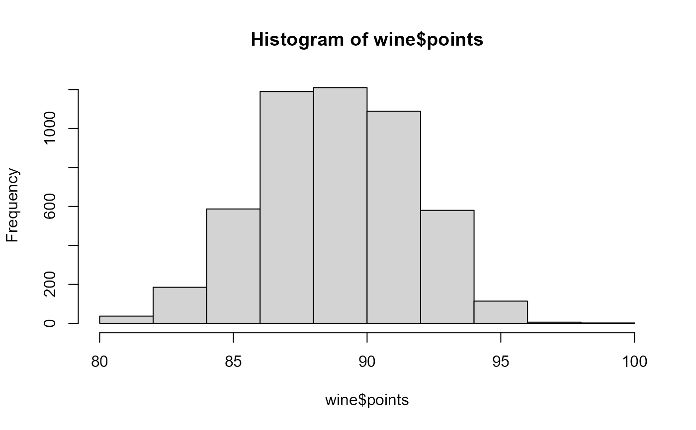

A data frame containing wine reviews for wines made in the United States, France, and Italy.
wineA data frame with 5,000 rows and 13 variables The variables are as follows:
a unique identifier
country that the wine is from
description of the wine, written by the taster
vineyard within the winery where the wine is from
number of points the wine was rated on a scale of 1 - 100
cost of the bottle of wine($)
the province or state that the wine is from
the wine growing area within the province or state
name of the reviewer
twitter handle of the reviewer
title of the wine review; contains the vintage of the wine
type of grape used to make the wine
winery where the wine was produced
The full data set can be found on Kaggle https://www.kaggle.com/zynicide/wine-reviews
This is a good dataset for both quantitative and text mining.
summary(wine)
#> id country description designation
#> Length:5000 Length:5000 Length:5000 Length:5000
#> Class :character Class :character Class :character Class :character
#> Mode :character Mode :character Mode :character Mode :character
#>
#>
#>
#>
#> points price province
#> Min. : 80.00 Min. : 7.00 California:1639
#> 1st Qu.: 87.00 1st Qu.: 22.00 Washington: 701
#> Median : 89.00 Median : 35.00 Oregon : 437
#> Mean : 89.34 Mean : 41.76 Burgundy : 252
#> 3rd Qu.: 91.00 3rd Qu.: 50.00 Tuscany : 217
#> Max. :100.00 Max. :550.00 Alsace : 202
#> (Other) :1552
#> region taster_name taster_twitter_handle
#> Columbia Valley (WA): 299 Roger Voss :1100 Length:5000
#> Willamette Valley : 184 Virginie Boone : 795 Class :character
#> Alsace : 179 Kerin O’Keefe : 785 Mode :character
#> Russian River Valley: 159 Paul Gregutt : 735
#> Champagne : 157 Matt Kettmann : 533
#> Napa Valley : 126 Sean P. Sullivan: 413
#> (Other) :3896 (Other) : 639
#> title variety
#> Length:5000 Pinot Noir : 770
#> Class :character Chardonnay : 497
#> Mode :character Red Blend : 420
#> Cabernet Sauvignon : 298
#> Bordeaux-style Red Blend: 243
#> Syrah : 220
#> (Other) :2552
#> winery
#> Columbia Crest : 25
#> Louis Latour : 18
#> Chateau Ste. Michelle: 16
#> Cayuse : 13
#> Chehalem : 13
#> :Nota Bene : 12
#> (Other) :4903
table(wine$points)
#>
#> 80 81 82 83 84 85 86 87 88 89 90 91 92 93 94 95 96 97 98 99
#> 4 6 27 56 129 232 355 503 687 549 661 621 468 361 219 88 26 3 3 1
#> 100
#> 1
hist(wine$points)

plot(wine$points, wine$price,
main = "Wine Prices by Score",
xlab = "Score (1-100)",
ylab = "Price ($)")
wine[1, ]
#> id country
#> 1 1 US
#> description
#> 1 Cabernet Sauvignon (80%) makes up the majority of this wine, with the rest equal parts Cabernet Franc and Merlot. Aromas of high-toned green herbs, spice, black cherry and blackberry lead to lively cranberry and cherry flavors. It shows a sense of freshness, though at times it seems a bit green.
#> designation points price province region
#> 1 Frederick Estate Grown 89 50 Washington Walla Walla Valley (WA)
#> taster_name taster_twitter_handle
#> 1 Sean P. Sullivan @wawinereport
#> title
#> 1 Spring Valley Vineyard 2013 Frederick Estate Grown Red (Walla Walla Valley (WA))
#> variety winery
#> 1 Bordeaux-style Red Blend Spring Valley Vineyard